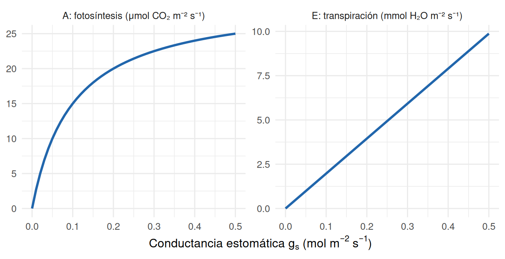
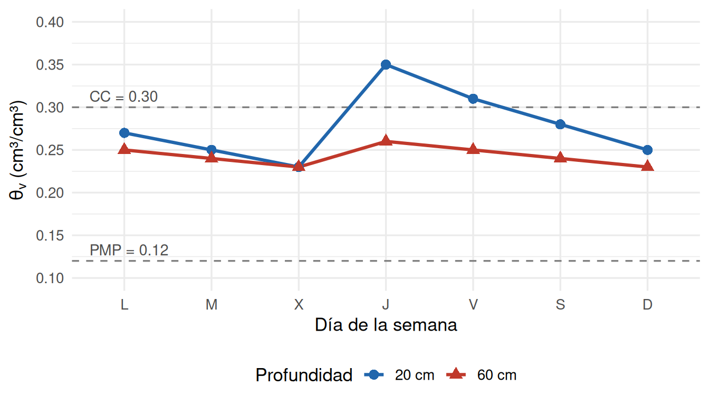

Cátedra 2 — Relación Suelo Agua Planta
Unidad 2 (sesión 2.4) y Unidad 3 · RAA3–RAA5
| Asignatura | TAG2027 — Relación Suelo Agua Planta |
| Evaluación | Cátedra 2 (Sesión 2.4 y Unidad 3 · RAA3–RAA5) |
| Nombre | |
| RUT | |
| Sección / Fecha | |
| Duración | 90 minutos |
| Puntaje total | 100 puntos (Parte A: 66 · Parte B: 34) |
| Exigencia | 60% (nota 4.0 \(\approx\) 60 puntos) |
0.1 Instrucciones generales
- Lee cada pregunta con atención antes de responder.
- En las preguntas de conceptos, responde con tus propias palabras y justifica brevemente. Se evalúa el razonamiento, no solo la palabra clave.
- En los ejercicios de cálculo, escribe siempre: dato → fórmula → cálculo → unidad y una interpretación agronómica de una línea. Un número sin interpretación no se considera completo.
- En los ejercicios de lectura de gráfico, indica el valor leído, la fórmula y el cálculo; la interpretación es parte del puntaje.
- Puedes usar calculadora, pero no material impreso ni aplicaciones de terceros.
- Integridad académica: toda respuesta debe ser elaboración propia. El uso de IA u otras fuentes no autorizadas, o la copia entre compañeros, se rige por el Reglamento del Alumno UDLA (Art. 72) y puede significar nota 1.0.
- Distribución sugerida del tiempo: Parte A \(\approx\) 60 min · Parte B \(\approx\) 30 min.
0.2 Fórmulas y constantes de referencia
| Magnitud | Expresión |
|---|---|
| Agua disponible total | \(ADT = CC - PMP\) (cm³/cm³) ; \(L_{ADT} = \sum (CC_i - PMP_i) \times Z_i\) (mm) |
| Agua fácilmente aprovechable | \(AFA = ADT \times p\) |
| Umbral de riego | \(\theta_{umbral} = CC - AFA = PMP + (1-p) \times ADT\) |
| Lámina neta / bruta | \(L_n = AFA\) ; \(L_b = L_n / E_a\) |
| Frecuencia de riego | \(F = AFA / ETc\) (días) |
| Promedio ponderado del perfil | \(\bar{x} = \sum (x_i \times Z_i) / \sum Z_i\) |
| Potencial hídrico total | \(\Psi = \Psi_m + \Psi_o + \Psi_g + \Psi_p\) |
| Potencial gravitacional | \(\Psi_g = \rho\, g\, h \approx 0.01\) MPa por metro de altura |
| “Ley de Ohm” vegetal | \(J = \Delta\Psi / R\) |
| Conductancia estomática | \(g_s = 1 / r_s\) ; \(E \approx g_s \cdot DPV / P_{atm}\), con \(P_{atm} \approx 101.3\) kPa |
| Eficiencia de uso del agua | \(WUE = A / E\) (μmol CO₂ / mmol H₂O) ; \(WUE_i = A / g_s\) |
Conversiones: \(1\) mm \(= 1\) L/m² · \(1\) m \(= 1000\) mm · \(1\) MPa \(= 1000\) kPa.
Puntos hídricos: Capacidad de Campo (CC) \(\Psi_m = -33\) kPa · Punto de Marchitez Permanente (PMP) \(\Psi_m = -1500\) kPa.
1 Parte A — Preguntas de conceptos (66 puntos)
1.1 A.1 — ¿Qué mide cada instrumento? (6 puntos)
Relaciona cada instrumento con la variable que mide. Usa cada letra una sola vez.
Variables: (a) conductancia estomática \(g_s\) · (b) contenido gravimétrico de agua \(\theta_g\) · (c) constante dieléctrica aparente \(K_a\) (convertida a \(\theta_v\)) · (d) potencial mátrico del suelo \(\Psi_m\) · (e) potencial hídrico de hoja o tallo por presión de equilibrio · (f) potencial hídrico a partir de la humedad relativa del aire en equilibrio.
| Instrumento | Letra |
|---|---|
| 1. Muestreo y secado en estufa a 105 °C | |
| 2. Tensiómetro | |
| 3. Sensor FDR / TDR | |
| 4. Cámara de presión de Scholander | |
| 5. Porómetro | |
| 6. Psicrómetro |
1.2 A.2 — ADT no es lo mismo que AFA (8 puntos)
Un agricultor afirma: “Mi suelo almacena 120 mm de agua disponible (ADT), así que solo riego cuando el cultivo se haya consumido los 120 mm”.
- ¿Qué error comete? Explica qué le ocurre a la planta a medida que el suelo se acerca al PMP, aunque todavía no lo alcance.
- Para el mismo suelo, ¿por qué la fracción de agotamiento permisible \(p\) es menor en lechuga (\(p \approx 0.30\)) que en alfalfa (\(p \approx 0.60\))?
1.3 A.3 — Vías de absorción y banda de Caspary (10 puntos)
- Completa la tabla para las tres vías de movimiento radial del agua en la raíz.
| Vía | ¿Por dónde viaja el agua? | ¿Cruza membranas? | Velocidad / grado de control |
|---|---|---|---|
| Apoplasto | |||
| Simplasto | |||
| Transcelular |
- ¿Dónde se ubica la banda de Caspary, de qué está formada y qué consecuencia tiene para la vía apoplasto? ¿Qué le pasaría a la planta si no la tuviera?
1.4 A.4 — Marchitez con el suelo mojado (9 puntos)
En los tres casos siguientes el suelo tiene agua, pero el cultivo muestra síntomas de falta de agua. Para cada caso indica (i) el factor del suelo responsable, (ii) el mecanismo que reduce la absorción y (iii) una recomendación de manejo.
- Un productor de lechuga riega “por si acaso” todos los días durante una semana. El suelo está saturado y las plantas se ven marchitas.
- Tomate trasplantado a inicios de septiembre en la zona central. El suelo está a capacidad de campo pero su temperatura es de 6 °C. Las plantas muestran síntomas de sequía.
- Un maíz se riega con agua de pozo de alta salinidad. El sensor indica humedad cercana a CC, pero las hojas se enrollan al mediodía.
1.5 A.5 — ¿Cómo llega el agua a la copa de un nogal de 25 m? (10 puntos)
- Explica por qué ni la capilaridad ni la presión de raíz son suficientes para subir el agua hasta la copa.
- Explica la teoría de cohesión-tensión identificando las tres fuerzas que intervienen y el papel de cada una.
- ¿Qué es la cavitación (embolismo)? Indica dos condiciones que la favorecen y qué hace la planta para evitarla.
1.6 A.6 — Medir el estado hídrico de la planta (7 puntos)
- Describe en tres pasos cómo se mide el potencial hídrico con la cámara de presión de Scholander y qué representa la presión leída.
- ¿En qué se diferencia el \(\Psi\) de tallo del \(\Psi\) de hoja? ¿Para qué se cubre la hoja con una bolsa de aluminio antes de medir?
- Da una situación en que preferirías medir en la planta (Scholander o porómetro) en vez de usar solo un sensor de humedad de suelo. Justifica.
1.7 A.7 — Tú eres el estoma (8 puntos)
Para cada escenario indica si los estomas estarán abiertos, a medias o cerrados, y justifica en una línea.
| Escenario | Estado | Justificación |
|---|---|---|
| 1. Vid a las 10:30, sol pleno, DPV = 1.0 kPa, suelo cerca de CC. | ||
| 2. Vid a las 15:00 en enero, DPV = 3.8 kPa, \(\Psi_{hoja} = -1.5\) MPa. | ||
| 3. Tuna (planta CAM) a las 02:00 de la madrugada, suelo húmedo. | ||
| 4. Tomate en invernadero con CO₂ enriquecido (1000 ppm) y buena luz. |
1.8 A.8 — El trade-off del estoma y la WUE (8 puntos)
La Figura A.8 muestra cómo cambian la fotosíntesis (\(A\)) y la transpiración (\(E\)) de una hoja al aumentar la apertura estomática (\(g_s\)), con DPV constante.
- Explica el trade-off del estoma entre CO₂ y H₂O. Da dos razones por las que la planta no puede mantener los estomas siempre cerrados para ahorrar agua.
- Usando la forma de las curvas, explica por qué un cierre estomático parcial (déficit hídrico moderado) aumenta la WUE. ¿Qué práctica de riego aprovecha este efecto?
- ¿Por qué las plantas C4 (maíz) tienen mayor WUE que las C3 (trigo, vid)?
2 Parte B — Ejercicios (34 puntos)
2.1 B.1 — Programación de riego en un perfil estratificado (14 puntos)
Un predio de tomate industrial (\(p = 0.40\)) regado por aspersión (\(E_a = 0.75\)) tiene el siguiente perfil de suelo. La ETc actual es de 6.0 mm/día.
| Horizonte | Z (cm) | CC (cm³/cm³) | PMP (cm³/cm³) |
|---|---|---|---|
| Ap (0–20) | 20 | 0.36 | 0.16 |
| Bt (20–60) | 40 | 0.31 | 0.17 |
| C (60–90) | 30 | 0.25 | 0.14 |
Calcule:
- ADT de cada horizonte (cm³/cm³ y mm) y la lámina de ADT total del perfil (mm).
- AFA del perfil (mm).
- Lámina bruta a aplicar en cada riego (mm).
- Frecuencia de riego (días entre riegos). Indique cómo redondea y por qué.
- Umbral de riego como \(\theta_v\) promedio del perfil (cm³/cm³).
2.2 B.2 — Lectura de una serie de sensores de humedad (10 puntos)
La Figura B.2 muestra las lecturas diarias de dos sensores FDR instalados a 20 cm y 60 cm en un parrón de vid (\(p = 0.45\)). El suelo tiene \(CC = 0.30\) y \(PMP = 0.12\) cm³/cm³.

Responda:
- ¿Qué día hubo riego? ¿El agua llegó con fuerza a los 60 cm? Justifique con los valores leídos.
- El jueves el sensor de 20 cm marca más que CC. ¿Qué ocurre con ese exceso y cuándo vuelve el suelo a CC aproximadamente?
- Calcule el umbral de riego y la tasa de consumo diaria a 20 cm entre el viernes y el domingo (cm³/cm³/día).
- ¿Qué día recomendaría el próximo riego? ¿Qué cambiaría en la lámina aplicada según lo observado a 60 cm?
2.3 B.3 — Gradiente de potencial y eficiencia de uso del agua (10 puntos)
Parte a. En un palto de 12 m de altura, a mediodía, se miden los siguientes potenciales hídricos:
| Suelo | Raíz | Xilema | Hoja | Atmósfera |
|---|---|---|---|---|
| −0.04 MPa | −0.35 MPa | −0.90 MPa | −1.60 MPa | −90 MPa |
- Calcule la caída de potencial (\(\Delta\Psi\)) en cada tramo y el porcentaje que representa el tramo hoja → atmósfera sobre la caída total.
- ¿En qué tramo está la mayor resistencia al flujo? Justifique con \(J = \Delta\Psi / R\) y nombre la estructura que la regula.
- Calcule el \(\Psi_g\) que debe vencer la planta para llevar agua a la copa. ¿Es relevante comparado con la caída suelo → hoja?
Parte b. El mismo día y con el mismo DPV se miden dos cultivos:
| Cultivo | \(A\) (μmol CO₂ m⁻² s⁻¹) | \(E\) (mmol H₂O m⁻² s⁻¹) |
|---|---|---|
| X | 18 | 6.0 |
| Y | 24 | 4.0 |
- Calcule la WUE de cada cultivo e indique cuál es probablemente C3 y cuál C4.
- A las 14:00 el cultivo X cierra parcialmente sus estomas: \(A\) baja a 15 y \(E\) baja a 3.5. Calcule la nueva WUE y explique el resultado.